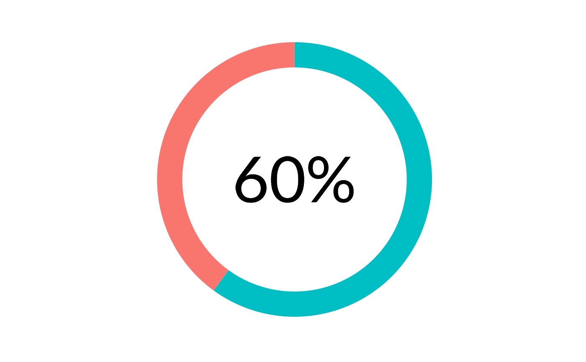

Create a donut plot with the text value of the percentage in the center, using ggplot_donut().
Arguments
- p
Proportion to plot. Must be a value between
0and1.- accuracy
A number to round to. Use (e.g.)
0.01to show 2 decimal places of precision. IfNULL, the default, uses a heuristic that should ensure breaks have the minimum number of digits needed to show the difference between adjacent values.Applied to rescaled data.
- hsize
Size of the donut hole. Defaults to
4, and must be a non-negative value.- size
Font size to use. Defaults to
20.- family
Font family to use. Defaults to
"Lato".
Details
ggplot_donut_percent() creates a data frame and calls ggplot_donut() to create the base plot,
removes the legend, and adds a geom_text() centered in the plot.
The text label is formatted using scales::label_percent() with the specified accuracy.
Examples
library(showtext)
font_add_google("Lato", "Lato")
showtext_auto()
# workaround for https://github.com/yixuan/showtext/issues/51
showtext_opts(dpi = 192)
ggplot_donut_percent(0.6)
